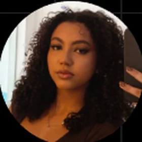
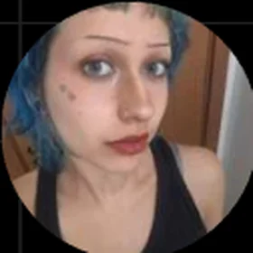
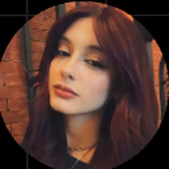
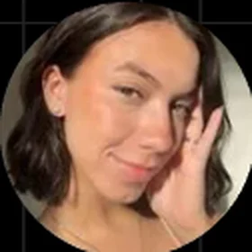
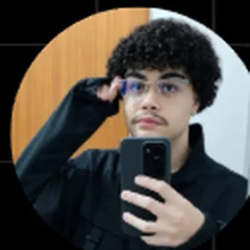
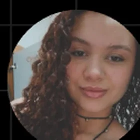
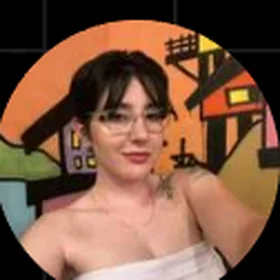
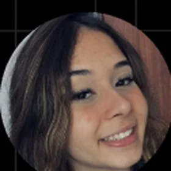

Melissa Leão Marinho
Diretora geral
Conheça o propósito do Noctivivium, a história do nome e as pessoas que dão vida ao projeto.
Inspirado na ideia de noite e vida, Noctivivium é um nome criado para representar aquilo que floresce fora dos holofotes: cenas, pessoas, músicas, estéticas e histórias que encontram na diferença um lugar de expressão.
Não é uma palavra clássica do latim, mas uma criação poética com sonoridade latina. Para nós, a noite não significa ausência de vida. É também encontro, criatividade, movimento e pertencimento.
O Noctivivium é um espaço editorial sobre cultura alternativa. Nosso olhar percorre música, arte, moda e comportamento para conhecer histórias que não cabem em um único estilo. Aqui, a diferença não é um detalhe a explicar: é parte da experiência de existir.
O Noctivivium é o portal editorial. A Agência Âmago é a equipe criativa de estudantes de Comunicação Social do Uni-FACEF, em Franca (SP), responsável pelo projeto transmídia e pela websérie Vozes da Noite. A Obsidian Style é uma marca retratada na narrativa, não a identidade do portal.
Conheça os integrantes e suas funções na produção de Vozes da Noite.

Diretora geral

Diretora de arte

Técnica de som

Editora

Roteirista

Roteirista

Fotógrafa / filmmaker

Produtora